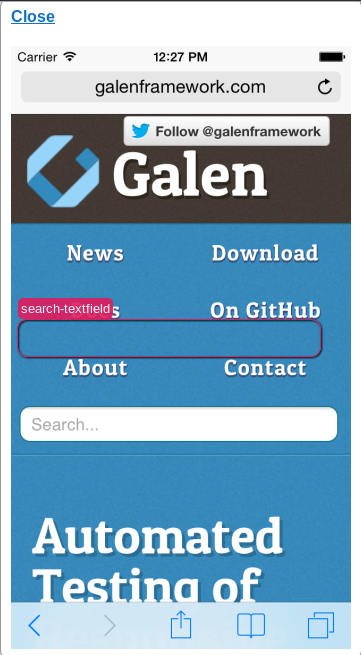
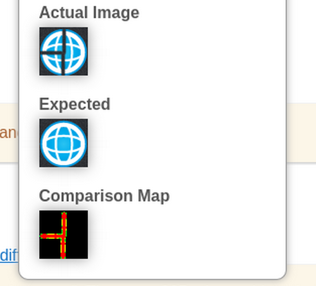
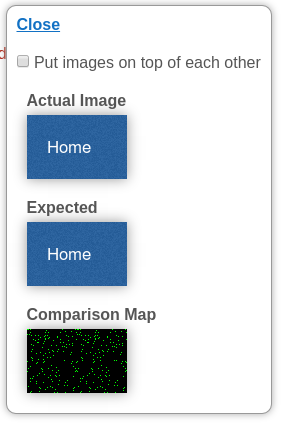
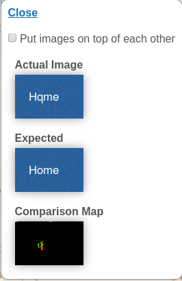
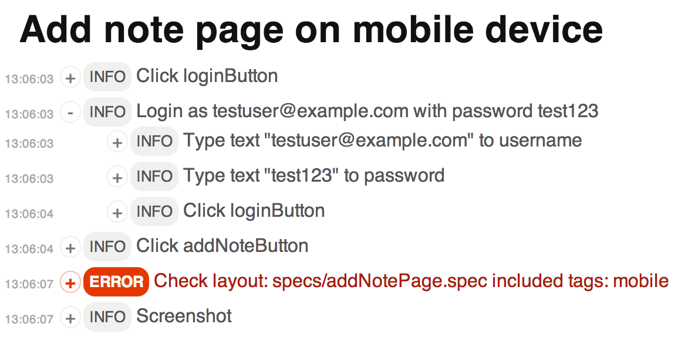
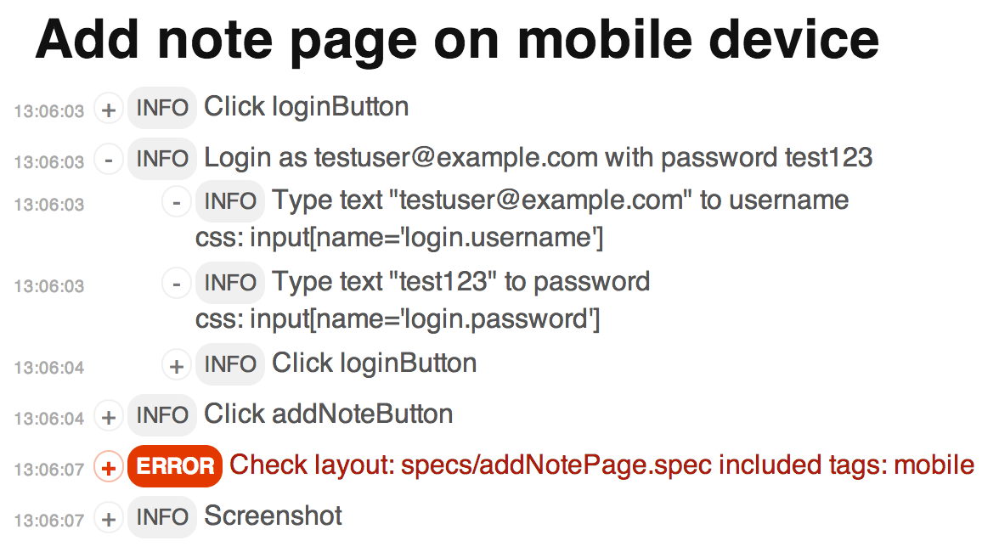
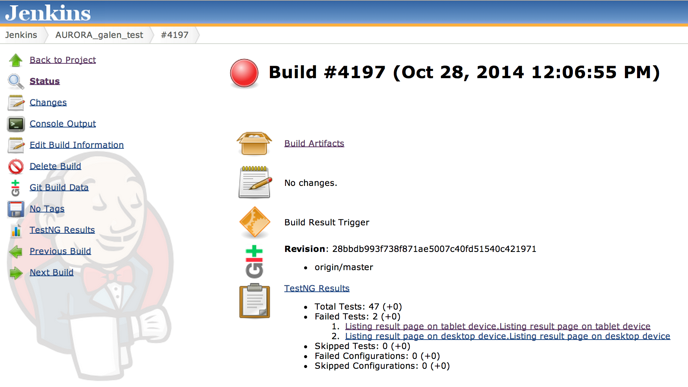

Testing
Responsive Layout
UI Testing was Hard
Common techniques
- Manually
- Comparing screenshots
- Combined
But what about..
Responsive Design?
What if ...
... we could describe the layout rules in simple words?
and make it consistent across different screen sizes
What if...
... we could test it on real mobile devices ?
Galen Framework
Lets talk about...
- Page specifications writting for multiple screen sizes
- Test Suite parameterize tests for different devices
- Complex Layout how to deal with it?
- Running in a cloud on real mobile devices
- Visual testing with image comparison
- JavaScript tests and structured reporting
- Galen in Continuous Integration include it in your release cycle
Page Specifications
Galen Specs
The Syntax
============================================No tabs! Only spacesobject-name-1 css selector object-name-2 xpath //div[@id='some-div'] object-name-3 id some-id============================================@ tag ------------------------------object-name check-name: check-value
Near
button near: textfield 10px right
Inside
button inside: container 10px top left
Inside (a bit more complicated)

button inside: container 10px left right, 20px top bottom
Above / Below

caption above: description 15px# or like this description below: caption 15px
Aligned
menu-item-* aligned horizontally top: menu-item-1
Aligned
menu-item-* aligned horizontally all: menu-item-1
Aligned Vertically
menu-item-* aligned vertically left: menu-item-1 1px
All checks
- absent
- near
- above
- below
- inside
- aligned
- centered
- color scheme
- component
- visible
- text
- on
- width
- height
- contains
- image
Page Specifications: Ranges
Range is the core for all checks
Exact value
width: 100px
Greater than / Less than
width: > 100px height: < 100px
Simple range
width: 100 to 150px
Approximate value
width: ~ 100px width: 97 to 103px
Relative value
width: 70% of screen/width
Combined ranges
width: > 50 % of screen/width height: 50 to 60 % of screen/height
Real life example
Requirement
Navigation panel should stretch on mobile and tablet devices and be located under main section. But on desktop it should have static width of 300px and be on the right side of a screen near a main section
Solution
@ mobile, tablet navigation width: 100% of main/width below: main 0px @ desktop navigation width: 300px near: main 0px right
How do we run it?
$ galen check homepage.spec --url "http://example.com" --size "400x600" --include "mobile" --htmlreport "reports-dir"
What do we get?

Defining a Test Suite
Simple example
Home page on mobile device http://galenframework.com 400x800 check homepage.spec --include "mobile"
Advanced Test Suite
@@ Set domain galenframework.com @@ Table devices | deviceName | tags | size | | Mobile | mobile | 320x600 | | Tablet | tablet | 640x480 | | Desktop | desktop | 1024x800 | @@ Parameterized with devices Home page on ${deviceName} device http://${domain}/ ${size} check homepage.spec --include "${tags}"
Complex Layout
What shall we do with this?

Solution
=============================================== user-profile-* css #profiles .profile =============================================== [ 1 - 9 ]user-profile-@ above: user-profile-@{+1} 5px
component: specs/user-profile-component.spec
Or even so:
=============================================== user-profile-* css #menu ul li =============================================== [ 2 - ${count("user-profile-*")} ] user-profile-@ below: user-profile-@{-1} 5px
Running in a cloud
Selenium Grid
Homepage in Selenium Grid in Chrome
selenium grid http://hostname:4444/wd/hub
--page http://example.com --size 640x480
--browser Chrome --version "21.0"
--platform "XP"
check homepage.spec
Sauce Labs
Screenshot
Visual testing
Color Scheme
login-button color scheme: ~2% white, > 80% #397fb8; @ login-button-highlighted login-button color scheme: ~2% white, > 80% #24a10b;
Image Comparison
logo image: file imgs/logo.png, error 10%, tolerance 50
Image Comparison
But what if?
Image Filters
logo image: file imgs/logo.png, map-filter denoise 1
Even if
Hqme
Galen will catch it
JavaScript Tests
test("Home page on mobile device", function (){
var driver = createDriver(
"http://example.com", "1024x768");
checkLayout(driver, "home.spec", ["mobile"]);
});
var devices = {
mobile: { deviceName: "mobile",
size:"350x600", tags: ["mobile"]
},
desktop: { deviceName: "desktop",
size:"1024x768", tags:["desktop"]
}
};
forAll(devices, function (device) {
test("Home page on ${deviceName}", function (device){
var driver = createDriver(
"http://galenframework.com",
device.size);
checkLayout(driver, "homepage.spec", device.tags);
});
});
GalenPages JavaScript Framework
function LoginPage (driver) {
GalenPages.extend(this, driver, {
login: "#login-form .login",
password: "xpath: //input[@type='password']",
submitButton: "id: submit-button"
});
}
var loginPage = new LoginPage(driver);
loginPage.waitForIt();
loginPage.login.typeText("testuser@example.com");
loginPage.password.typeText("test123");
loginPage.submitButton.click();
function LoginPage (driver) {
GalenPages.extend(this, driver, {
login: "#login-form .login",
password: "xpath: //input[@type='password']",
submitButton: "id: submit-button",
loginAs: function (username, password) {
this.login.typeText(username);
this.password.typeText(password);
this.submitButton.click();
}
});
}
new LoginPage(driver)
.waitForIt()
.loginAs("testuser@example.com", "test123");
Reports

function LoginPage (driver) {
GalenPages.extend(this, driver, {
login: "input[name='login.username']",
password: "input[name='login.password']",
submitButton: "id: submit-button",
loginAs: function (username, password) {
var loginPage = this;
logged("Login as " + username +
" with password " + password, function() {
loginPage.login.typeText(username);
loginPage.password.typeText(password);
loginPage.submitButton.click();
}):
}
});
}
Structured Reports
Structured Reports
Galen in Continuous Integration
galen test . --testngreport testng.xml
Galen in Continuous Integration
Questions?
What we talked about:
- Page specifications writting for multiple screen sizes
- Test Suite parameterize tests for different devices
- Complex Layout how to deal with it?
- Running in a cloud on real mobile devices
- Visual testing with image comparison
- JavaScript tests and structured reporting
- Galen in Continuous Integration include it in your release cycle
For more information visit GalenFramework.com project website or GitHub project page
Also you can find some interesting articles about Galen Framework on MindEngine.net blog